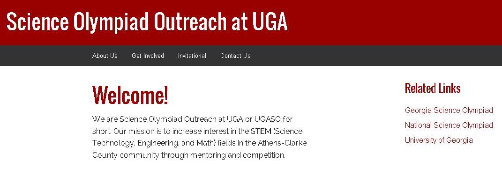

About Me
Hi, I'm Heather, and I like to make things.
I am currently a sophomore at the University of Georgia studying Chemistry and Computer Science. My interests lie in the intersection between medicine and technology as well as ways technology can make life easier for others. I've been involved in technology related endeavors since the third grade, but it was only in college that I finally began to pursue coding as a true career path. I hope to continue developing as both a person and a developer over the next few years!
Projects
 The Creation of Justin
The Creation of Justin
During the summer after my freshman year of college, I studied abroad in Cortona, Italy as part of the UGA Cortona Study Abroad program. While in Cortona, I learned about infectious diseases as well as history behind some of the greatest artwork in history -like the David. However, with this immersion into art came an intense passion for parodying said art. Thus, the Creation of Justin was born, a parody photo-set of Michaelangelo's Creation of Adam. I created a platform for the photos to be displayed on in order to share the fun with my friends.
 Science Olympiad Outreach
Science Olympiad Outreach (UGASO) was a student organization I founded during Fall 2014. UGASO's mission is to promote STEM education in the Athens-Clarke County region through science competition and mentoring. We will be hosting UGA's first Science Olympiad Division C invitational on January 31st, 2015. So far, the tournament will have 29 teams participating with over 100 volunteers willing to help with logistics and event proctoring during the tournament. Additionally, we have reached out to local schools to try and start Science Olympiad teams in the Athens area.
More Info
Science Olympiad Outreach (UGASO) was a student organization I founded during Fall 2014. UGASO's mission is to promote STEM education in the Athens-Clarke County region through science competition and mentoring. We will be hosting UGA's first Science Olympiad Division C invitational on January 31st, 2015. So far, the tournament will have 29 teams participating with over 100 volunteers willing to help with logistics and event proctoring during the tournament. Additionally, we have reached out to local schools to try and start Science Olympiad teams in the Athens area.